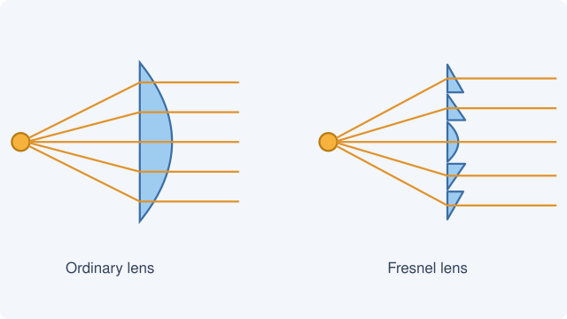

How a lighthouse lens works
A lamp sends its light in every direction, and most of it never reaches the sea. The lens of a lighthouse gathers that light and bends it into one flat beam, so that a flame no brighter than a few candles can be seen from a ship thirty kilometres away.

An ordinary lens strong enough for the job would be more than a metre thick and weigh tonnes. Augustin Fresnel saw that only the curved surface of a lens does the bending: he kept the surface and removed the glass behind it, cutting the lens into rings that each keep the right angle.
Reading the light
Turning the lens makes the beam sweep the horizon, so a ship sees a flash each time it passes. Every lighthouse has its own rhythm of flashes, and a chart lists them: the light tells a navigator not only that land is near, but which land it is.